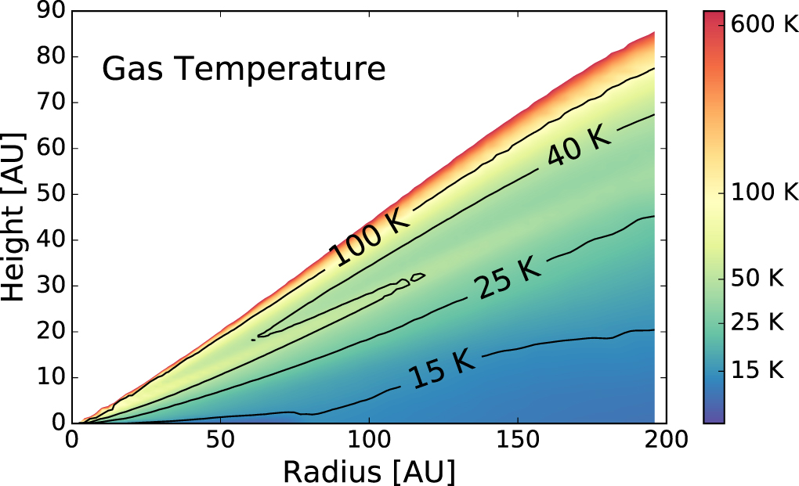
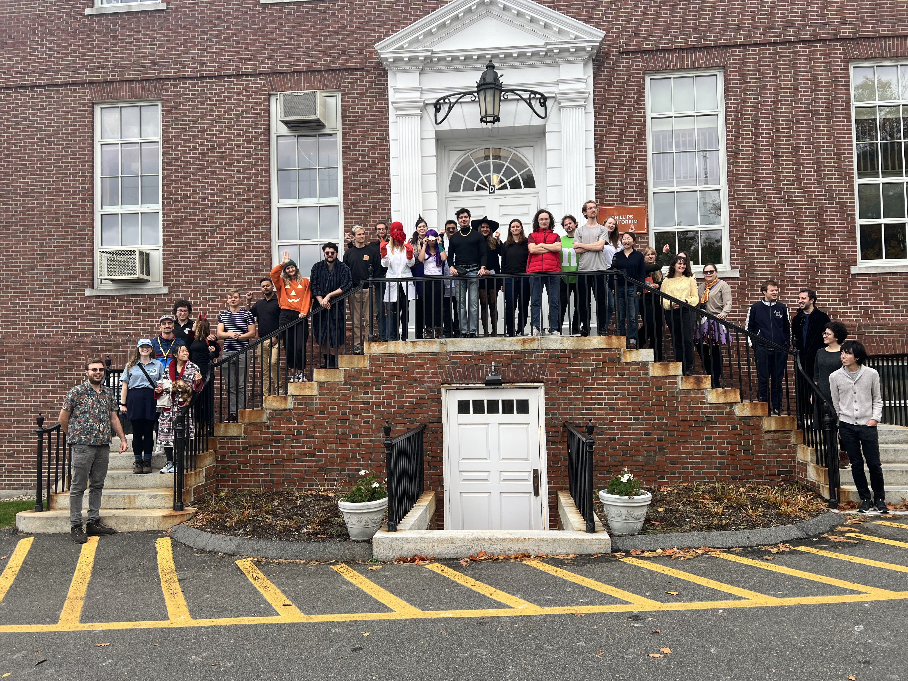
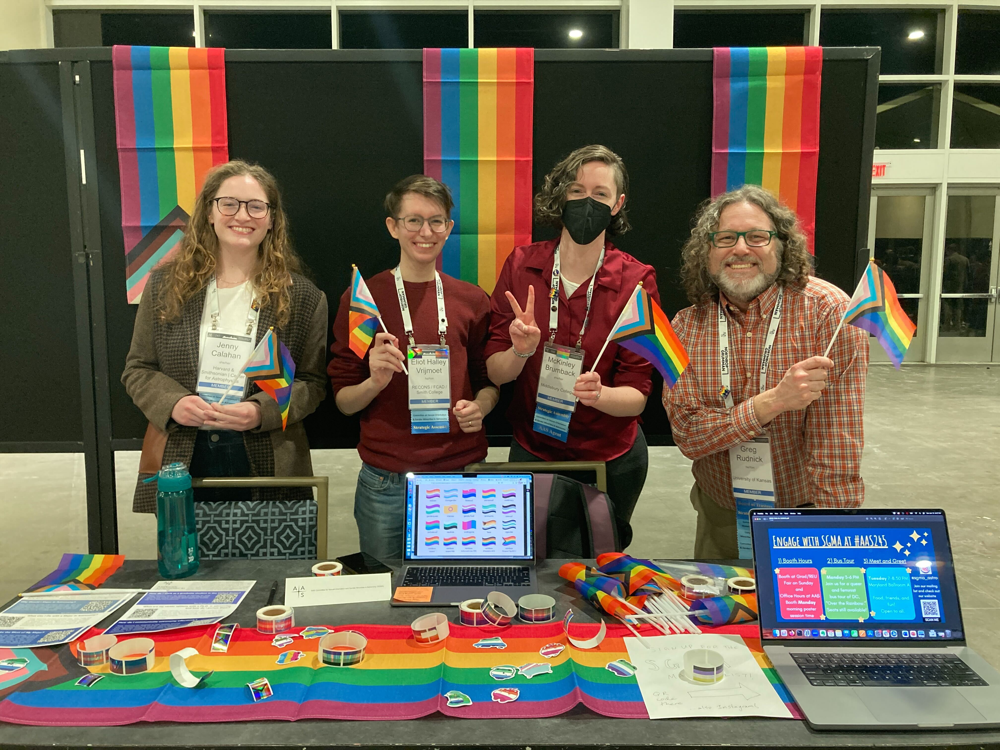
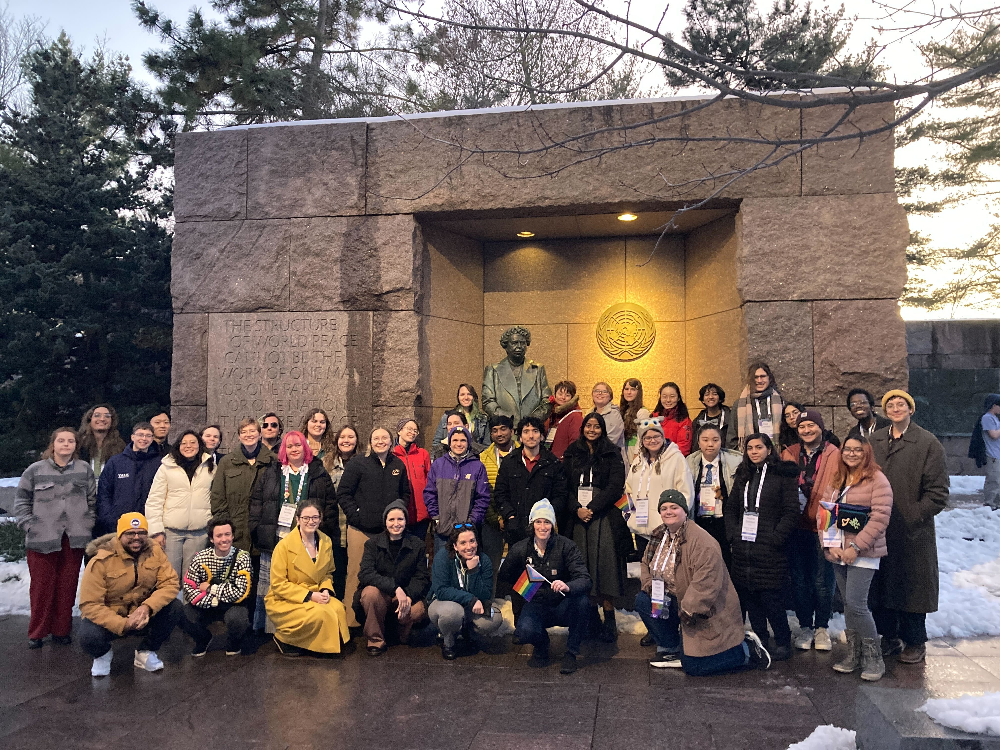

Making Astronomy Accessible Through Outreach and Service
Making astronomy more accessible for underrepresented groups helps everyone. Thus, I have used my skills as a leader, advocate, educator, and public speaker to promote inclusion in the field, and especially encourage and promote individuals in underrepresented groups. Hover over a card to learn more.
Postdoc Council Chair
hover for details



AAS SGMA Committee
hover for details



Public Outreach
hover for details